3D Printing
Printer calibration:
Before printing on a new printer/ extruder, a few things have to be done to ensure that prints come out decently.- Firstly, the bed needs to be leveled to ensure that the nozzle is able to place down a perfect first layer of plastic. Although some higher end printers may have an automatic bed leveling system like the BLtouch, both the school printer (makerbot replicator v2) and my printer (ender 3) do not come equipped with these.
- Secondly, the extruder needs to be calibrated to ensure that the correct amount of material is extruded through the nozzle. This can be one of the most important steps as most aspects of printing rely on the correct amount of plastic being extruded. As such, it can determine if your print looks like intended.
Slicer settings:
Layer height: This determines how thick each layer is. The thicker the layer height, the faster the print is completed, however, it can leave thick layer lines on the surface of the print.
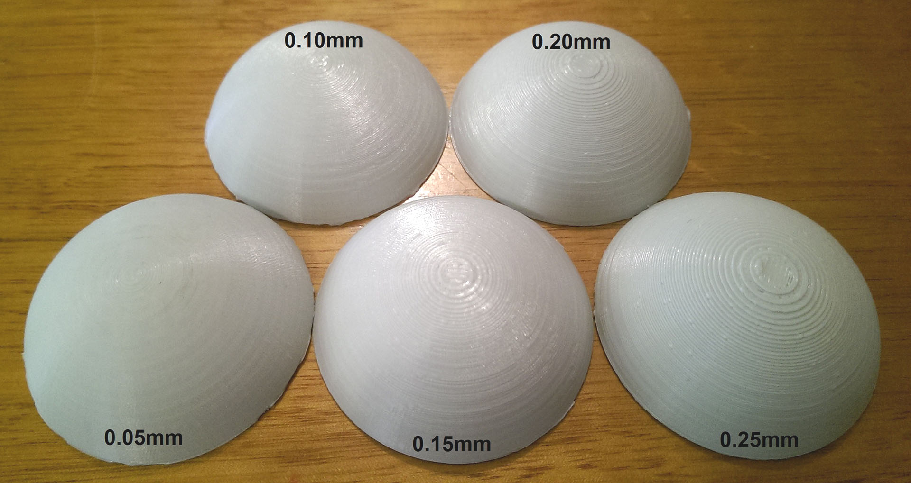
Infill percentage:
This parameter determines how dense the inside (infill) of the model will be. The higher the infill, the stronger and heavier the print. On the other hand, a higher infill percentage will result in a longer print time and higher filament usage. Thus, a low percentage (15%) is usually used for most prints that don't need the added strength.
By using the per model function in cura, i varied the infill percentage for these 4 cylinders. I got an open top by setting top layers to zero.
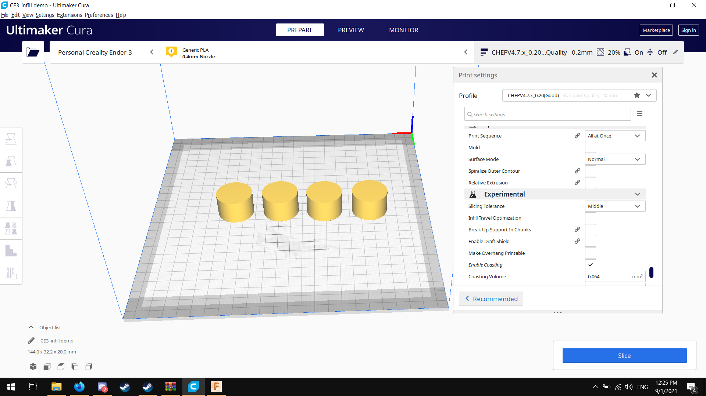
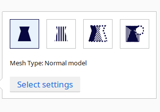
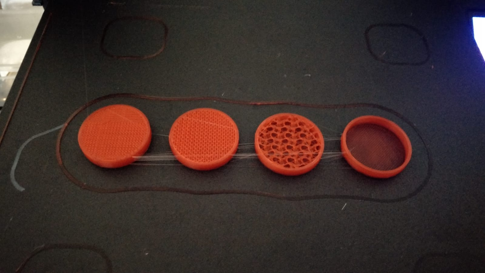
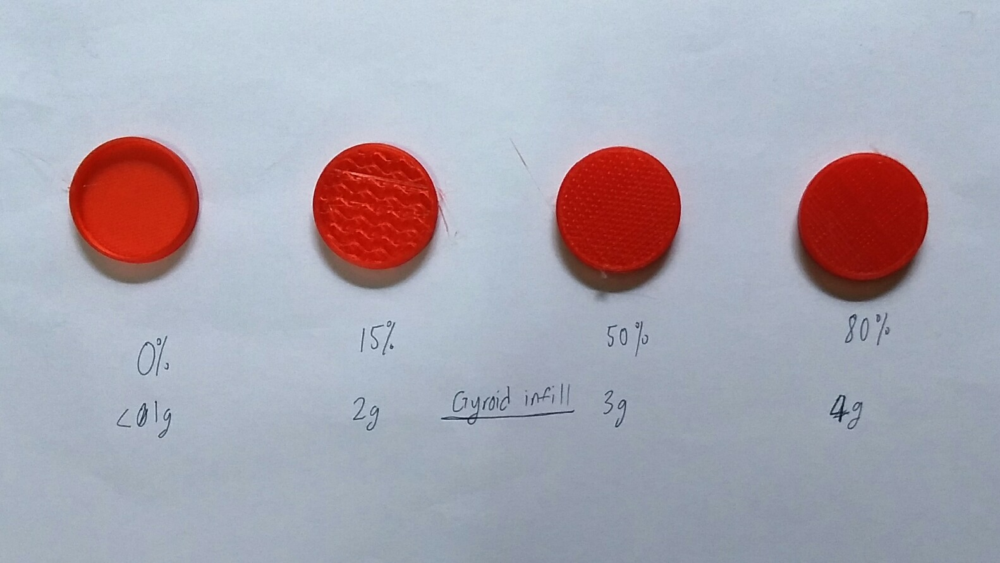

It is worth noting that vase mode (spiralise outer contour) can reduce print time even more in situations where infill is not required. This mode is can also be used to calibrate line width for a printer by printing a completely hollow cube. 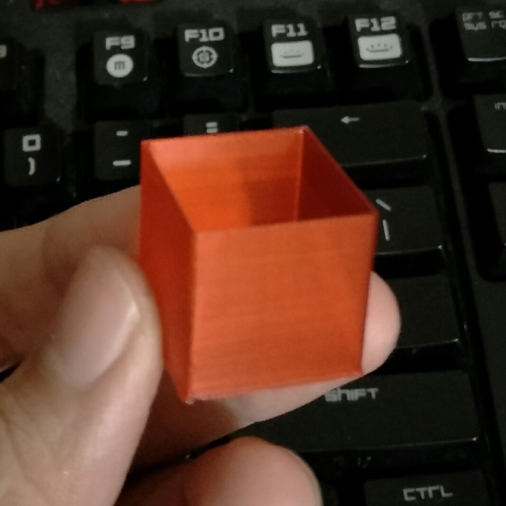
Supports: (info about overhangs and tree and normal supports)
A FDM system lays down plastic layer by layer to produce an object. This means that printers need support structure to print steep overhangs, typically more than 45 degrees, since printing over thin air can lead to unsightly sagging strands.
This is different from bridging, where the plastic is 'stretched over a distance' rather than printing in mid air. As such, it is supported on both ends unlike overhangs.
So, how do we improve the overhang performance of a printer?
- Firstly, we can make the plastic cool faster by either increasing cooling or using a thinner layer height. Since there is less plastic to cool down, the plastic cools faster and exhibits less sag.
- Secondly, we can use a lower printing speed to allow more time for the extruded plastic to be cooled from the part cooling fan. There is also a setting from Cura 4.8 that allows for the printer to wait for a certain time before proceeding to the next layer. This may be useful for certain materials like TPU that tend to remain pliable for longer.
Bed adhesion: (info about rafts, brim, skirt)
Printing PLA:
Below: printing on the school printer
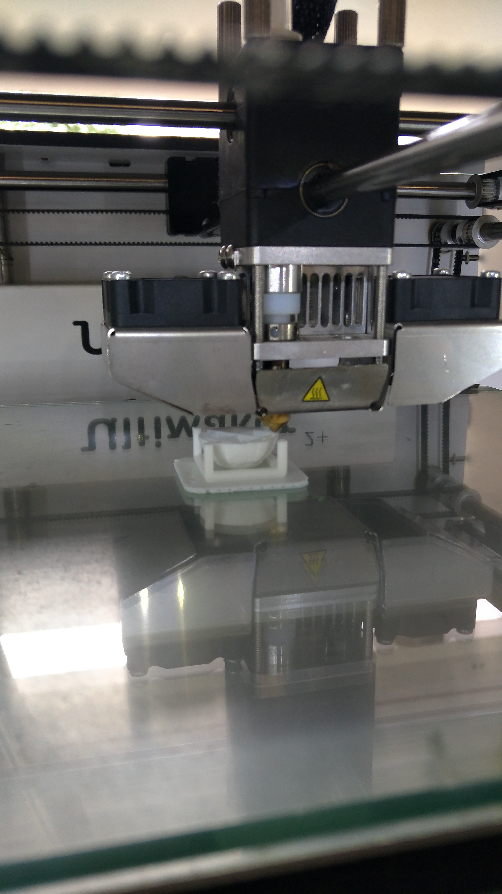
As we can see, the high print speed caused the overhangs on the ball to fail partially, resulting in a gap of a few layers in the skin. I think this was the result of underextrusion from the lack of tuning (This was the default cura profile for the ultimaker
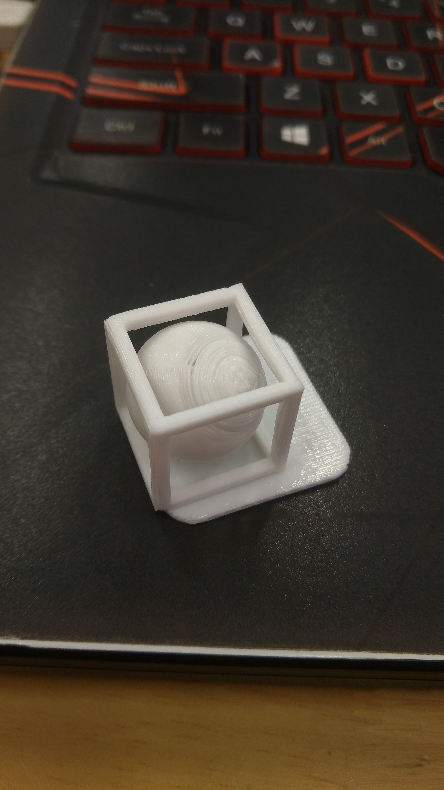
I also chose to use a raft since it pops off in once as compared to brims, which require a knife to remove cleanly
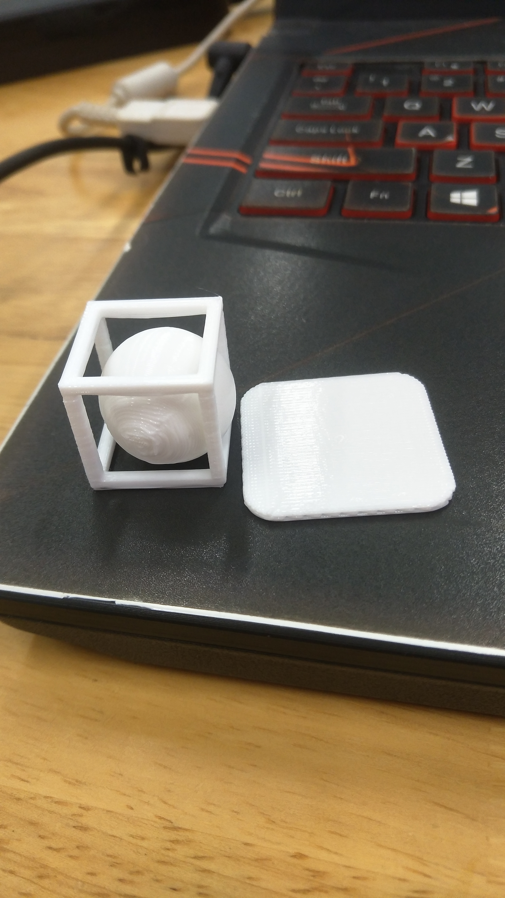
This is a pawn piece printed on my personal printer. Tuning in the print temperature allowed me to print with minimal stringing
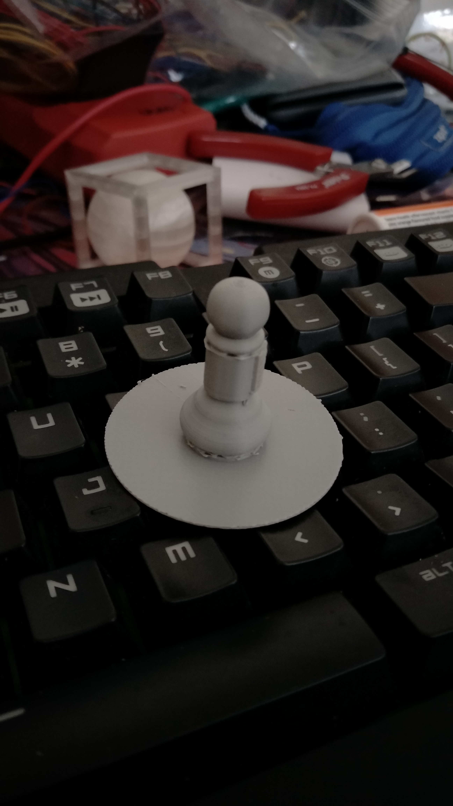
After removing the supports,
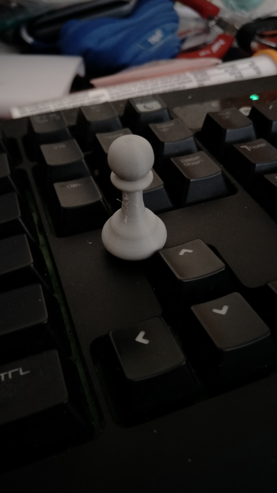
Printing TPU:
What i learned from experimentation is that TPU needs to be printed slow (around 20mm/s) on bowden setups, otherwise the flexible filament may come out of the extruder assembly and cause a print failure. It also has to be printed hotter than typical PLA and extrusion multiplier should be increased to around 145% to compensate for the underextrusion.
This is because TPU is much more flexible than PLA and is prone to clogging. A common analogy would be trying to push a thin string though a tube. If the string were to be pushed too fast, it would buckle inside the tube and jam up. This issue is especially prevalent in bowden style printers, where the extruder motor is far away from the hotend, meaning that it is more likely that the filament can jam up inside the tube or extruder assembly if either the printing speed is too high, or retraction is enabled.
After a few prints with this material, i found out that TPU tends to have poor horizontal layer adhesion if the extrusion multiplier is not turned up to around 145%. Also, if printing temperature is too high, stringing will become a huge issue since TPU strings are much harder to clean up than PLA strings, which snap off when pulled